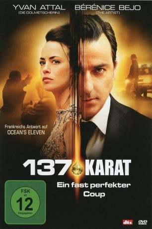

#6759 137 Karat - Ein fast perfekter Coup
 
 IMDB-Wertung: 6.3 / 10
IMDB-Wertung: 6.3 / 10  Metascore: 0
Metascore: 0 
Der professionelle Dieb Simon ist vorrübergehend auf Bewährung, was ihn jedoch nicht davon abhält mit seinem Partner Albert den nächsten Coup zu planen. Dieser überredet ihn nun zu einem besonders gewagten Streifzug: Albert bekommt die Gelegenheit, den legendären Florentiner-Diamanten im Wert von 40 Millionen Euro zu stehlen, wofür er und Simon sich mit einer kriminellen Gruppe zusammenschließen müssen. Für Simon ist der Raub eine Gelegenheit, die sich einem nur einmal im Leben bietet, und dafür freundet er sich mit der wunderschönen Julia an, die die Chefin der Diamanten-Auktion ist. Simon gibt vor, ein Sicherheitsexperte zu sein und erschleicht sich letztlich nicht nur ihr Vertrauen. Doch nach und nach überschlagen sich die Ereignisse…
Jahr: 2014
Dauer: 108 Minuten
FSK: 12
Land: Frankreich Studio: Koch MediaTonspuren:
Untertitel: Deutsch,
Auflösung: 1080p (1920x808) Größe: 4055 MB
Genre: Thriller, Drama, Krimi
Regisseur: Eric Barbier
Drehbuch: Eric Barbier
Soundtrack:
Darsteller:
 Yvan Attal als Simon
Yvan Attal als Simon Bérénice Bejo als Julia
Bérénice Bejo als Julia- Annie Cordy als Inès de Boissière
 Gene Bervoets als Philippe de Mazières
Gene Bervoets als Philippe de Mazières- Fabrice Boutique als Kopel
- Michel Tereba als Matthias
- Jean-François Stévenin als Albert
- Antoine Basler als Scylla
- Jacques Spiesser als Pierre Neuville
- Michel Israël als Jacques Galley
- Charlie Dupont als Michael Wurst
- Danièle Denie als Blanche de Courcy
- Daniel Hanssens als Mathieu Delcourt
- Cecilia Guichart als L'attachée de presse
- Issaka Sawadogo als Omar
- Bernard Sens als Sudek
- Olivier Bony als Faure
- Jehon Gorani als Blajo Kovac
- Oleg Narizhniyi als Niko Kovac
- Hervé Sogne als Euler
- Jules Werner als Salici
- Alexander Savaneli als Alexandre Grenienko
- Guy Cohen als Le vieux tailleur de pierres
- Jan Van Houcke als Jerry
- Gérard Klamm als Le directeur de l'hôtel d'Anvers
- Leila Schaus als Sam
- Patrick Hastert als Lorenz Bäumer
- Corentin Lobet als Le fourgue
- Azer Abbazov als Le responsable de la sécurité
- Didier Gesquière als Le responsable Linvas
- Bernard Bolzinger als L'employé bijouterie Vendôme
- Francine Heuse als La femme de chambre
- Christian Claes als Le vigile 1 - RDC ascenseur
- Kristos Kokkinis als Le vigile 2 - escargot
- Samir Colnot als Le vigile 3 - couloir PC
- Nicolas de Brulle als L'homme italien
- Olivier Massart als L'avocat
- Yann-Anthony Noghes als Le journaliste BFM TV
- Alain Schmitt als François Maleyssie
- Christelle Lapierre als La femme de Michael Wurst
Datei: X:\2014(A-F)\137 Karat - Ein fast perfekter Coup (2014, FSK12, 1920x808).mkv seit 30.08.2017
Festplatte: HD 2013(I-Z)-2014(A-Z)
 Es gibt insgesamt 119 Filme in der Gruppe '2014(A-F)'
Es gibt insgesamt 119 Filme in der Gruppe '2014(A-F)'